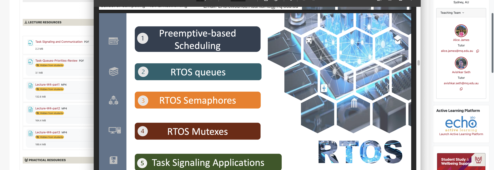
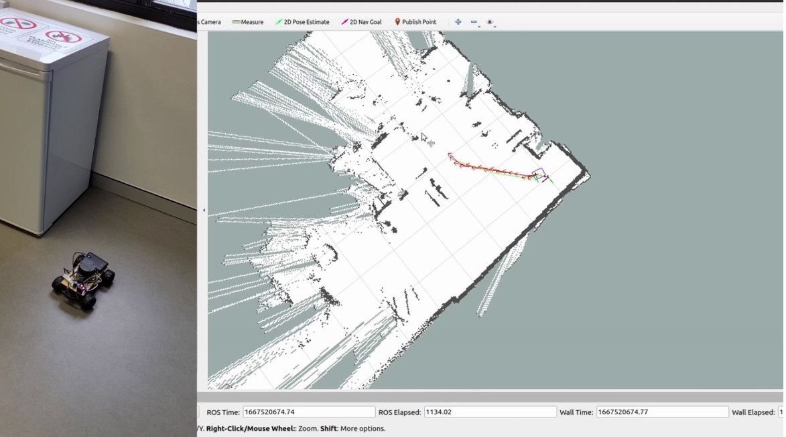
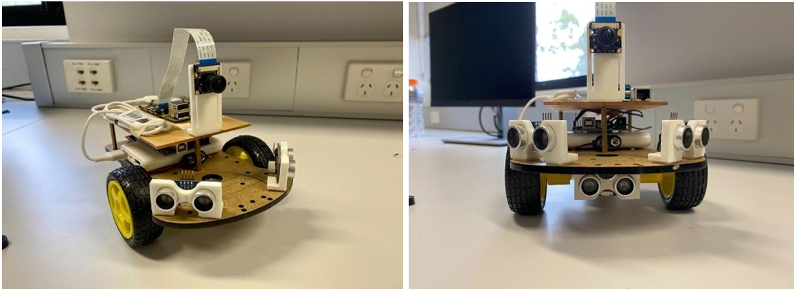
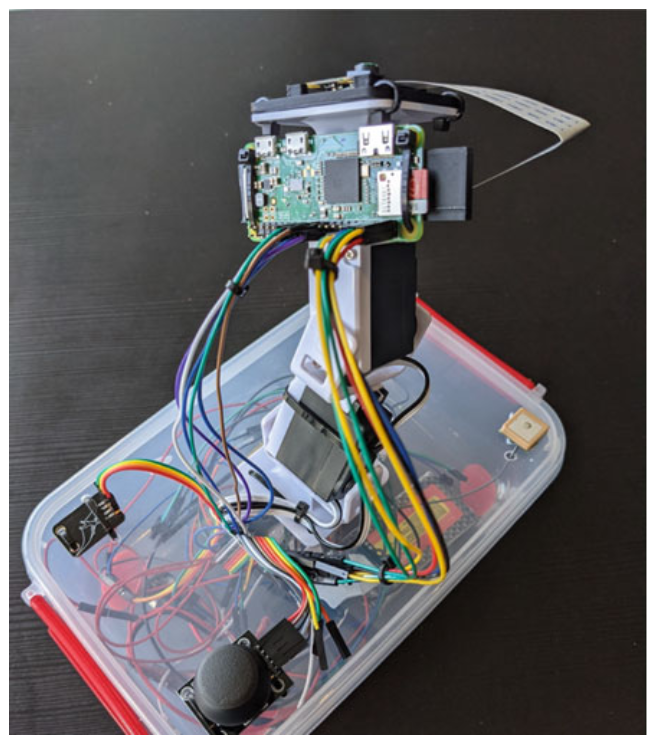
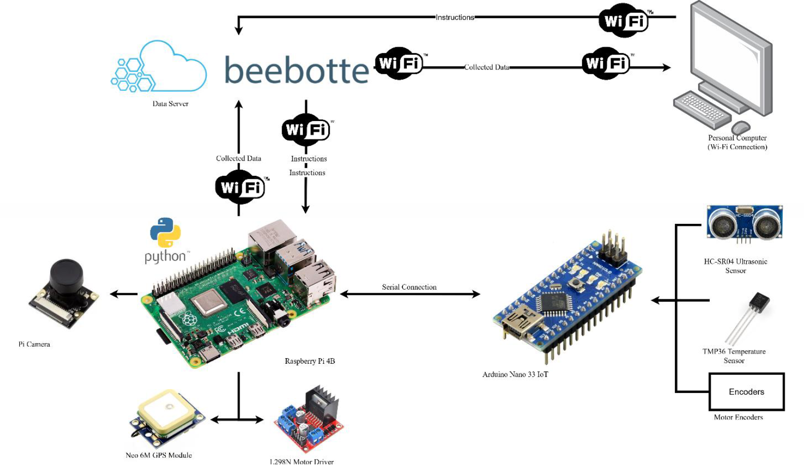
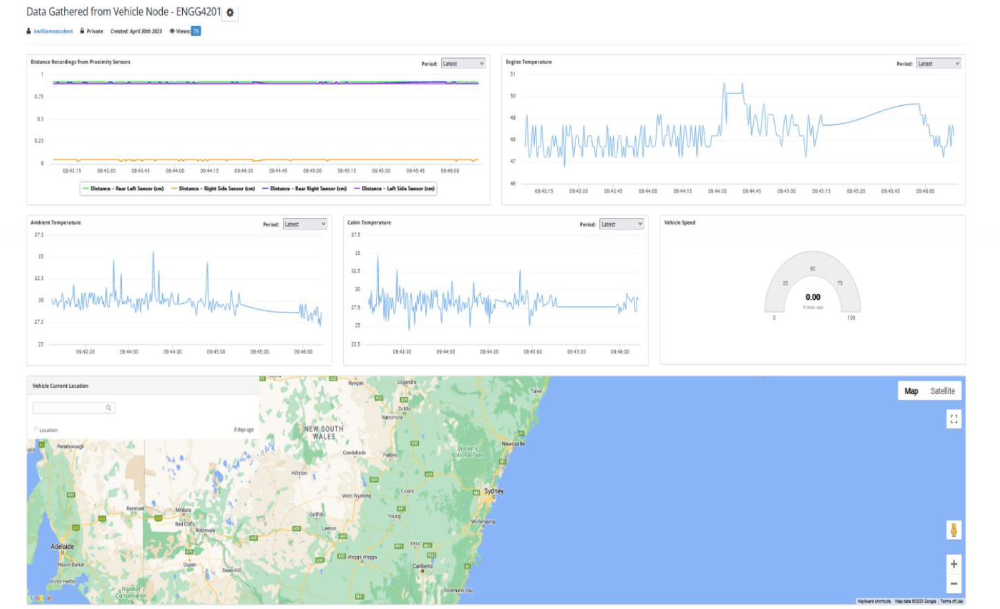
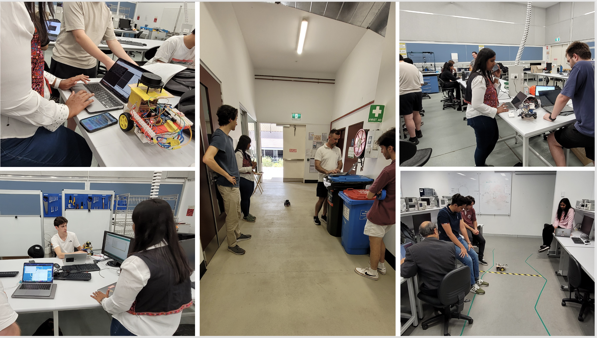
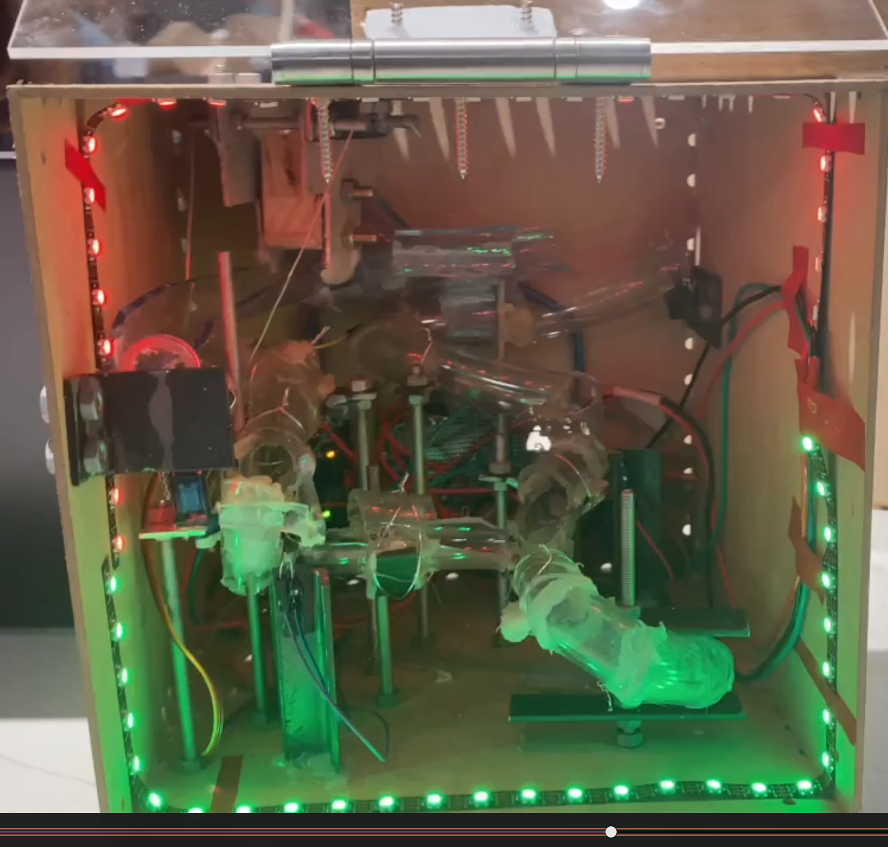
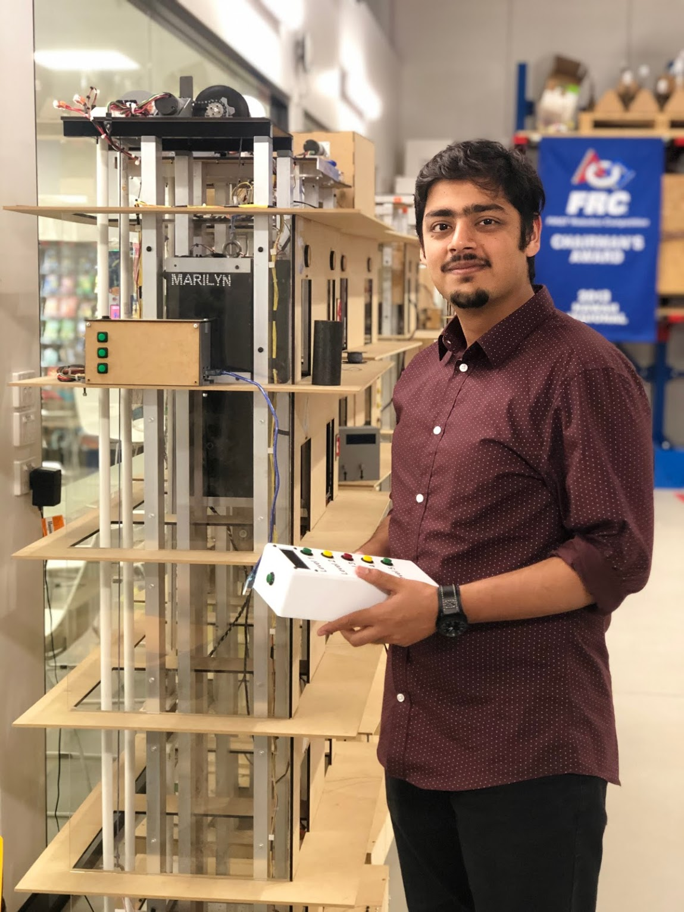

<!-- ======= Video Background ======= -->

        <!-- <video poster="" id="bgvid" playsinline autoplay muted loop> -->
          
          <!-- <source src="http://thenewcode.com/assets/videos/polina.mp4" type="video/mp4">  -->
          <!-- <source src="assets/img/videos/background3.mp4" type="video/mp4">  -->
        <!-- </video> -->

        <!-- <video poster="" id="bgvid" playsinline autoplay muted loop> -->
          <!-- <source src="http://thenewcode.com/assets/videos/polina.mp4" type="video/mp4">  -->
            <!-- <source src="assets/img/videos/background.mp4" type="video/mp4">  -->
        <!-- </video> -->


<!----------------------------------------------------------------
------------------------ Teaching Section -----------------------
----------------------------------------------------------------->
<section id="teaching" class="resume">
  <div class="container">

    <div class="section-title">
      <h2></h2>
      <p>Teaching @ Macquarie University</p>
    </div>

    <div class="row">
      <div class="col-lg-12">
    <p style="text-align: justify; font-size: 1.1rem; border-left: 5px solid #3498db; padding-left: 20px; margin-bottom: 30px; font-style: italic;">
  My mission in education is to make autonomous systems approachable and engaging, helping students see the creative thinking behind complex theory. 
  Through close work with student groups, I’m committed to mentoring teams in the MQ Robotics Club, Drone Society, MARS Rover, and the Advanced Drone Systems Research Centre at MQ—connecting research with meaningful real-world impact.
    </p>
      </div>
    </div>

    <div class="row" style="margin-bottom: 40px;">
      <div class="col-lg-6">
        <h3 class="resume-title">Co-Designer & Co-Instructor</h3>
        <div class="resume-item">
          <h4><a href="https://unitguides.mq.edu.au/unit_offerings/171469/unit_guide">COMP8291 IoT and Embedded Systems</a></h4>
          <h5>Jan 2025 - Present</h5>
          <p><em>This unit teaches the principles of IoT and Embedded Systems using RTOS and the STM32 dev board.</em></p>
        </div>
      </div>
      <div class="col-lg-6" style="display: flex; gap: 10px; justify-content: center; align-items: center;">
        
      </div>
    </div>

    <div class="row" style="margin-bottom: 40px;">
      <div class="col-lg-6">
        <h3 class="resume-title">Co-Designer & Co-Instructor</h3>
        <div class="resume-item pb-0">
          <h4><a href="https://unitguides.mq.edu.au/unit_offerings/149936/unit_guide">MTRN4068 Wireless Mechatronics</a></h4>
          <h5>July 2020 - Present</h5>
          <p><em>Co-designed and co-taught an advanced undergraduate course focused on hands-on experience designing, building, and programming mobile robots using ROS. Lab sessions aim to develop student skills in ROS, computer vision, motor control, sensor integration, mapping, localization, and navigation.</em></p>
        </div>
      </div>
      <div class="col-lg-6" style="display: flex; flex-wrap: wrap; gap: 10px; justify-content: center; align-content: flex-start;">
        
        
        
        
      </div>
    </div>

    <div class="row" style="margin-bottom: 40px;">
      <div class="col-lg-6">
        <h3 class="resume-title">Co-Designer & Co-Instructor</h3>
        <div class="resume-item pb-0">
          <h4><a href="https://unitguides.mq.edu.au/unit_offerings/149908/unit_guide">ENGG4201/8201 IoT System Design</a></h4>
          <h5>Feb 2021 - Dec 2025</h5>
          <p><em>Co-designed and co-taught an advanced course that provides hands-on experience in designing, building, and programming sensor networks and IoT projects. 
          Lab sessions focus on skill development in sensor integration, web design, data analysis, and machine learning in IoT applications.</em></p>
        </div>
      </div>
      <div class="col-lg-6" style="display: flex; gap: 10px; align-items: center; justify-content: center;">
        
        
        
      </div>
    </div>

    <div class="row" style="margin-bottom: 40px;">
      <div class="col-lg-6">
        <h3 class="resume-title">Mentor</h3>
        <div class="resume-item pb-0">
          <h4><a href="new_pages/mentor_students.html" target="_blank">School of Engineering & Computing, Macquarie University</a></h4>
          <h5>Feb 2021 – Present</h5>
          <p><em>Co-supervise undergraduate and postgraduate students, providing mentorship and support in their research projects.</em></p>
          <a href="new_pages/mentor_students.html"><i class="icofont-link"></i>&nbsp;More Info</a>
        </div>
      </div>
      <div class="col-lg-6" style="display: flex; justify-content: center; align-items: center;">
        <a href="new_pages/mentor_students.html" target="_blank">
          
        </a>
      </div>
    </div>

    <hr class="white-hr">

    <div class="row">
      <div class="col-lg-6">
        <h3 class="resume-title">Lab Tutor</h3>
        <div class="resume-item pb-0">
          <h4><a href="https://unitguides.mq.edu.au/unit_offerings/129626/unit_guide">ENGG2000/3000 Engineering Project Practice</a></h4>
          <h5>Feb 2021 - July 2021</h5>
          <p><em>Worked as a lab tutor for the sixth SPINE unit, a curriculum designed to cultivate professional acumen, transferable competencies, and employability. The unit blends online modules with hands-on, project-based learning activities and is co-facilitated by a team of academic experts.</em></p>
        </div>
      </div>
      <div class="col-lg-6" style="display: flex; gap: 10px; align-items: center; justify-content: center;">
        
        
      </div>
    </div>

  </div>
</section>
  
  
<!--------------------------------------------------->


 
